『転生したら○○だった件』
前の質問に戻るときは、戻るボタンを押してね！（ブラウザの戻るボタンは押さないでね！）
お風呂の湯船に付いている垢を舐めるのが好き？
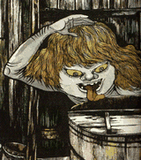
どちらかというと好きなのは・・
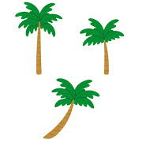
生まれ変わるとしたら・・・
将来、ハゲないか心配
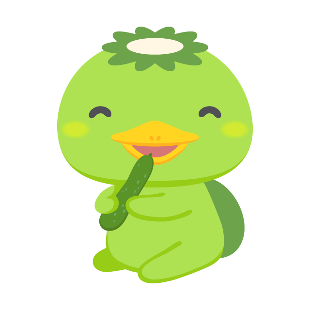
自分の外見的チャームポイントをすぐに言える
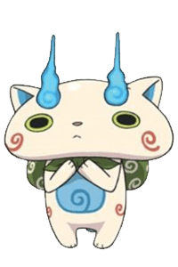
金運、もしくは稼ぐ力には自信がある

自分の体型は・・・
先見性があると思う
油っぽいものが好きだ
自分はエンターテイナーだ
難読漢字も割と読める
人付き合いは、どちらかというと
あなたが転生するなら・・・
「垢舐め」です！

風呂場に出没し、風呂桶にこびり付いた垢を舐め落とすと言う妖怪。「垢嘗」とも表記する。
外見は人間の子供に似ているが、ざんばら髪で鉤爪と長い舌を持つ。
『古今百物語評判』と言う書物によれば、古い風呂屋に棲む化物に「垢ねぶり」と言うものがあり、垢舐めはこの「垢ねぶり」と同一のもの、或いは根源を同じくする妖怪であると言われる。
Twitterでつぶやく
あなたが転生するなら・・・
「アマビエ」です！
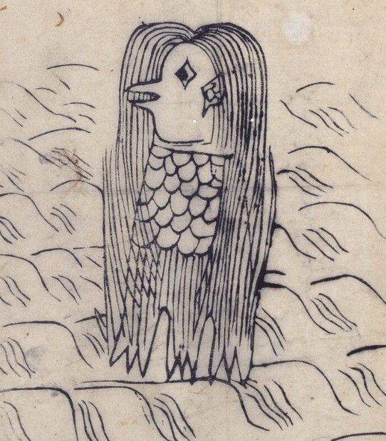
髪は長く、目は菱型、口は尖っていて胴体は鱗に覆われており、下半身には三本の足か鰭のようなものがある。
豊作と疫病を予言し、疫病予防のために自分の姿を写すようにいう。
Twitterでつぶやく
あなたが転生するなら・・・
「河童」です！

川に棲む妖怪で、きゅうりと相撲が好き。人間や家畜を川にひきづり込んで尻子玉を抜く。
ほぼ日本全国で伝承され、その呼び名や形状も各地方によって異なる。
Twitterでつぶやく
あなたが転生するなら・・・
「小豆あらい」です！
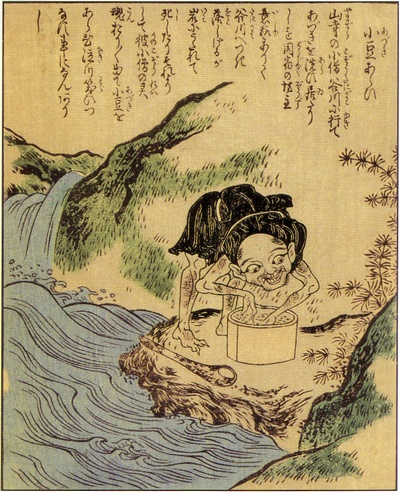
場所によって伝承が異なり、大分県では、川のほとりで「小豆洗おか、人取って喰おか」と歌いながら小豆を洗う。その音に気をとられてしまうと、知らないうちに川べりに誘導され落とされてしまうともいう。
所変わると、目撃すると幸運に恵まれるとも言われる。
Twitterでつぶやく
あなたが転生するなら・・・
「座敷ワラシ」です！

３〜15歳の子供の姿をしており、座敷や蔵に住む。
座敷わらしがいる家は栄えるが、彼らが去った後には没落する。
Twitterでつぶやく
あなたが転生するなら・・・
「ガシャドクロ」です！
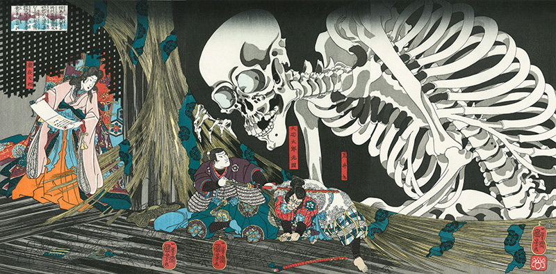
埋葬されなかった死者の骸骨や怨念が集まって巨大なドクロの姿になった。
生きた人間を握りつぶして食べる。
Twitterでつぶやく
あなたが転生するなら・・・
「件」です！
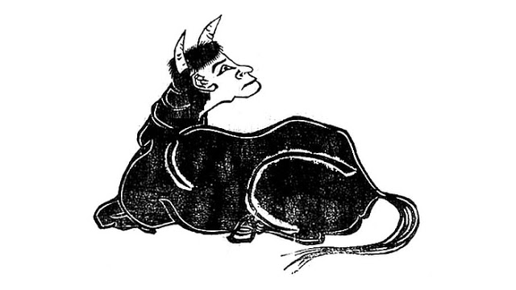
顔が人間、体が牛。
生まれて数日で死ぬが、その間に作物の豊凶や流行病、旱魃、戦争など重大なことに関して様々な予言をする。
Twitterでつぶやく
あなたが転生するなら・・・
「猫又」です！
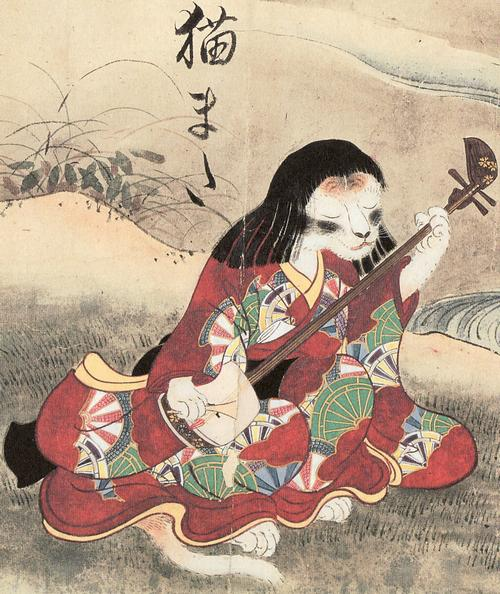
年を経て、尾が二つに分かれて人間を惑わせたりする猫。行灯の油が好物。
Twitterでつぶやく
あなたが転生するなら・・・
「分福茶釜」です！
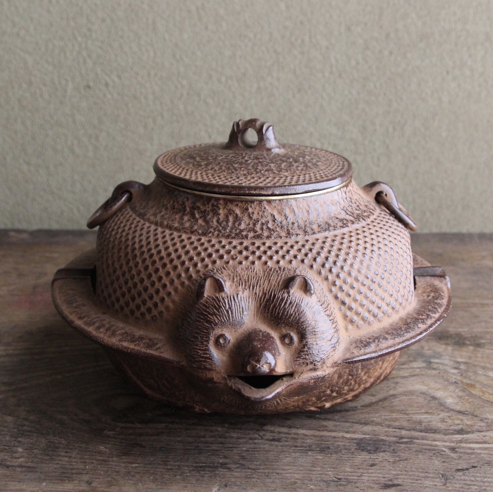
群馬県の茂林寺の和尚さんが買ってきた茶釜。たぬきだとバレて質屋に返却されてたが、見世物でお金を稼いでお寺に寄付した。
可愛い。
Twitterでつぶやく
あなたが転生するなら・・・
「鵺」です！
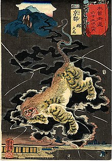
猿の顔、狸の胴体、虎の手足を持ち、尾は蛇。
内裏に現れて宮廷人を怯えさせたが、武人に退治された。
Twitterでつぶやく
あなたが転生するなら・・・
「付喪神」です！
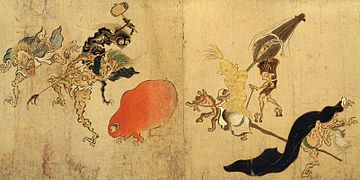
長い年月を経た道具が魂を持ったもの。人間をたぶらかす
Twitterでつぶやく